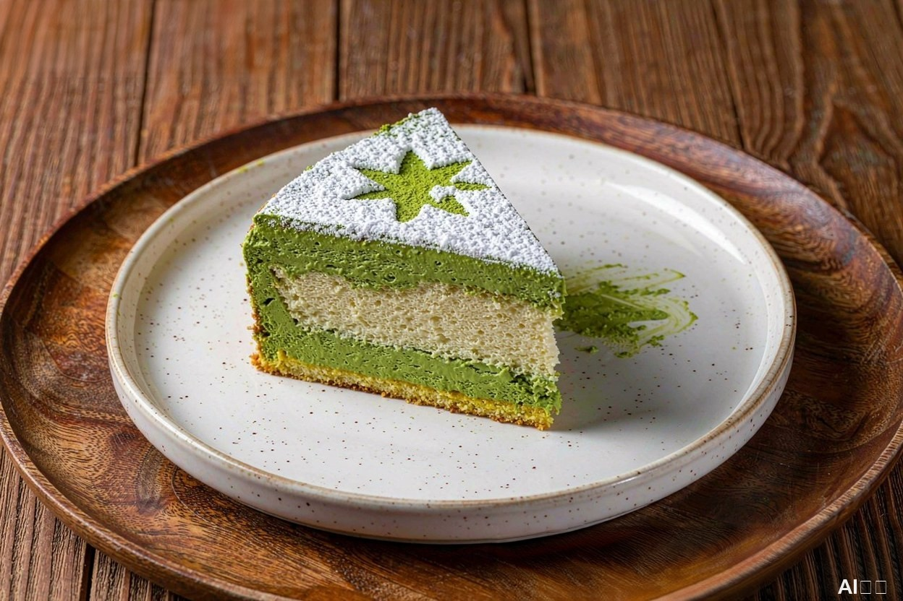
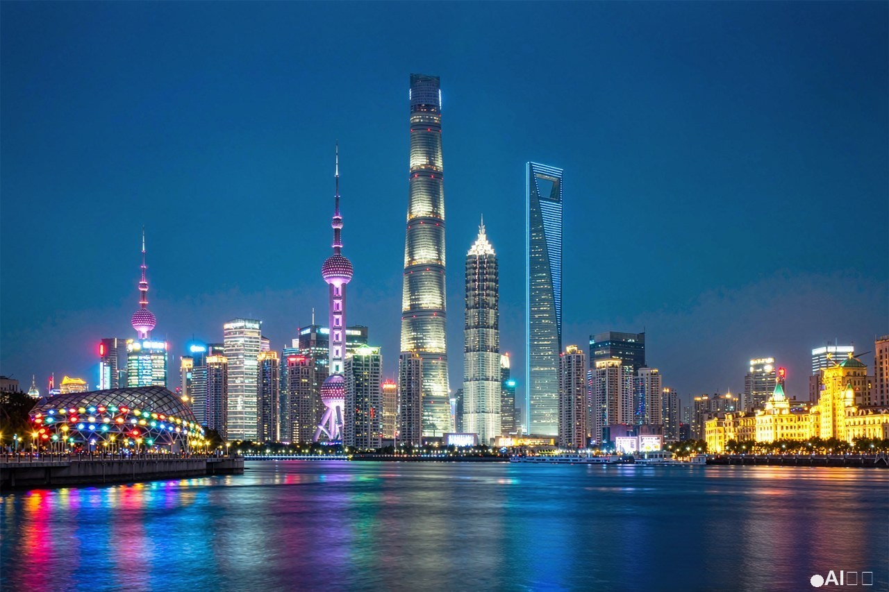
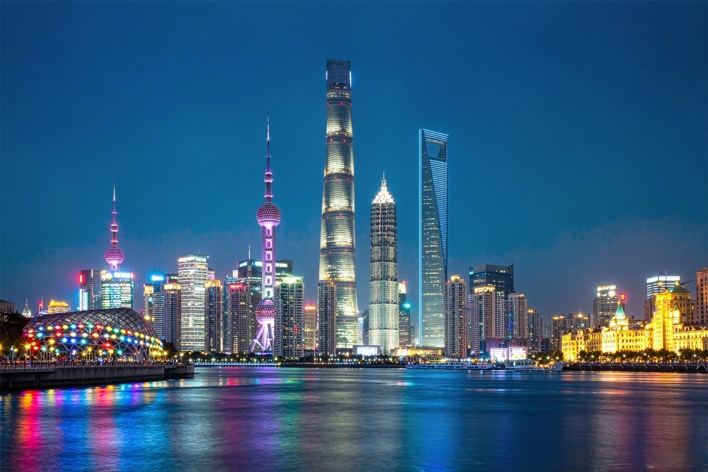

↔
浅色纹理背景，照样擦干净
AI 精准定位右下角的「AI生成」标记，重建其下方的木纹与食物细节，不留任何涂抹或模糊痕迹。
基于通义千问大模型，专治图片右下角的「AI生成 / 豆包AI生成」标记——AI 自动定位、精准擦除并重建背景，画面其余部分保持原样、一个像素都不改。
拖放图片到这里，或点击选择文件
支持 JPG、PNG、WEBP 格式，最大 20MB
均衡 · 遮罩精修 · 约 15~40 秒
✅ 仅框内区域会被 AI 重建，画面其余部分保持原始像素不变
正在上传图片…
0s
AI 正在重建标记下方的背景，通常需要 10 ~ 40 秒
🔒 图片仅在处理时临时使用，处理完成即从内存释放，我们不做任何存储
无论深色背景、浅色纹理还是复杂夜景，右下角的 AI 生成标记都能被干净擦除。

AI 精准定位右下角的「AI生成」标记，重建其下方的木纹与食物细节，不留任何涂抹或模糊痕迹。
无论是「AI生成」还是「豆包AI生成」，AI 都能识别标记文字并重建下方的水面倒影，画面自然如初。


霓虹倒影与灯光交织的夜景中，带小图标的标记也能被完整擦除，重建区域与周围光影无缝衔接。
低透明度的半透明标记同样逃不过 AI 的眼睛——擦除后桌面木纹与人像细节完好如初。
只需简单三步，即可轻松去除 AI 生成标记：
拖放您的文件或点击从您的设备中选择一张图片。我们支持 JPG、PNG 和 WEBP 格式。
AI 自动扫描右下角并框选「AI生成 / 豆包AI生成」标记，您也可以拖动框体微调位置。
AI 重建标记下方的背景像素，其余画面保持原样，下载原始分辨率的干净图片。
一款更先进的 AI 生成标记去除工具。
自动扫描图片右下角，框选「AI生成 / 豆包AI生成」标记，无需手动寻找，也可拖动框体微调。
AI 重建结果仅应用到标记框内，框外的每一个像素都与原图完全一致，绝不画蛇添足。
不是简单的涂抹或模糊。基于通义千问图像编辑大模型，AI 分析周围纹理、颜色和光照，智能重建标记下方的像素。
无需等待。上传、确认、下载，通常十几秒完成。您立即取回干净的图像，节省宝贵时间。
我们尊重您的画质。导出图片与上传时具有相同的原始分辨率，无压缩损失。
我们尊重您的隐私。所有处理均在您的浏览器与临时通道中完成，图片不会被存储，也不会被用于任何其他用途。
还有其他问题？欢迎通过电子邮件联系我们。
WatermarkZero是一款在线去水印工具，专注去除图片右下角的「AI生成 / 豆包AI生成」标记。它不是简单地涂抹或模糊标记，而是智能地重建其背后的背景。最终得到的是一张完美干净、自然的照片，仿佛标记从未存在过。
是的，完全免费使用，无需登录，也无需安装任何软件。
专治图片右下角的「AI生成」「豆包AI生成」等 AI 生成标记，包括白色实心、半透明以及带小图标的样式。其他位置或类型的水印暂不支持。
不会。AI 重建的结果只应用在标记框内，框外的每一个像素都与原图完全一致。如果您发现框选范围偏大，可以先拖动缩小框体再处理。
工具基于通义千问（Qwen）家族的大模型。定位阶段可选用 qwen3.8 / qwen3.7 / kimi-k3 等多模态视觉模型识别水印包围盒；擦除阶段可选用 wanx2.1-imageedit、wan2.7-image-pro 或 Qwen-Image-3.0 图像编辑模型，AI 分析标记周围的纹理、颜色和光照，智能地生成新的像素来重建该区域。
我们目前支持最常见的图像格式（JPG、PNG、WEBP），单个文件最大 20MB。
标记框支持拖动移动和四角缩放。如果自动检测位置有偏差，直接拖动框体微调，框住完整标记后再点击去除即可。
这取决于图像的版权以及您的使用意图。本工具旨在用于合法目的，例如创作者管理自己生成的作品。我们坚决要求所有用户尊重版权法，并拒绝为任何侵犯版权的行为提供服务。